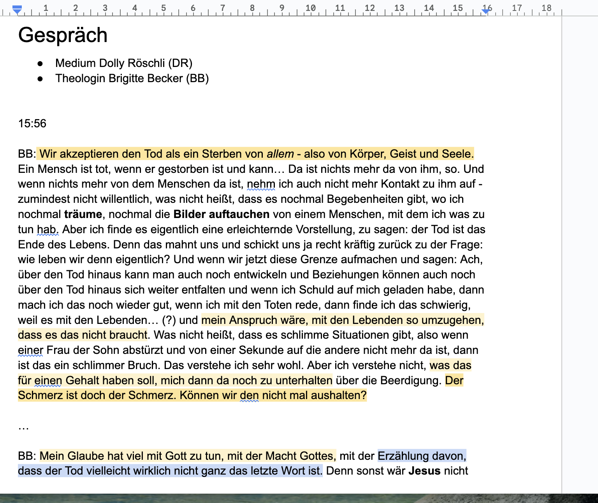
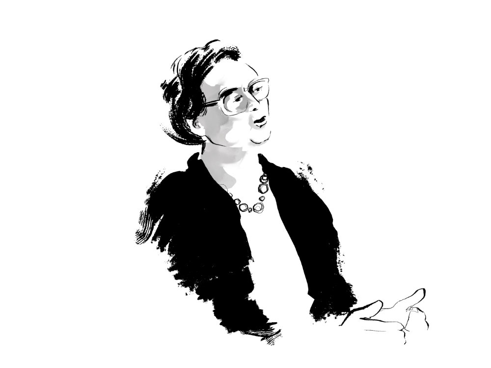
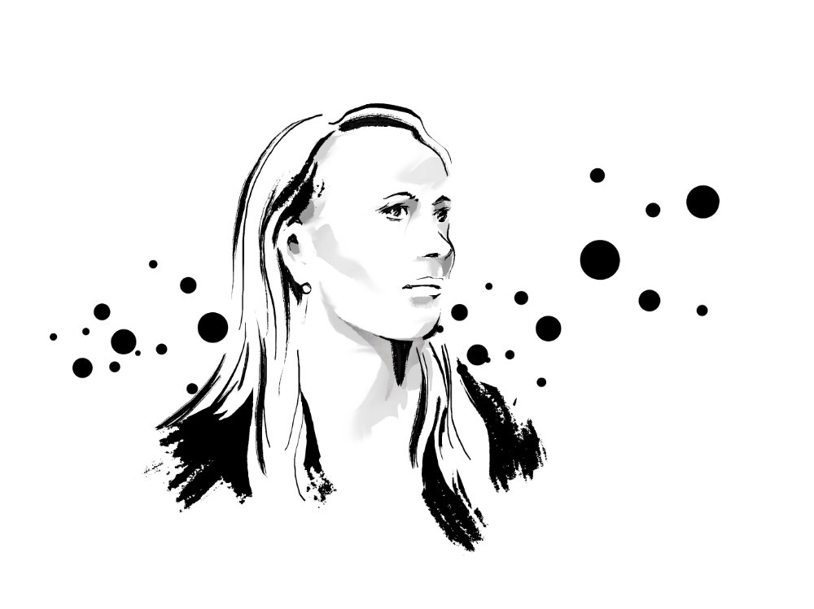
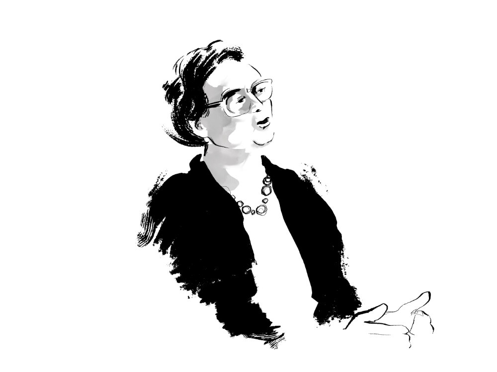
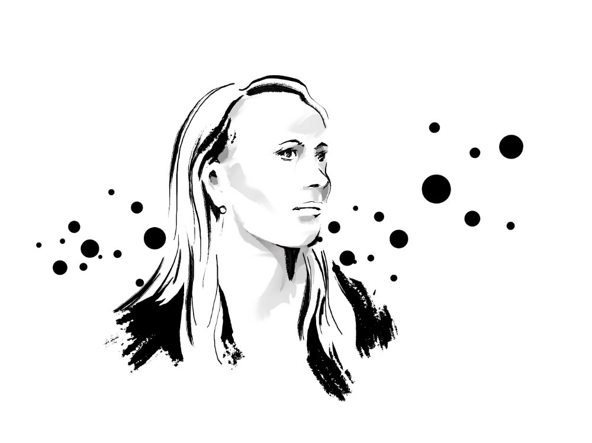
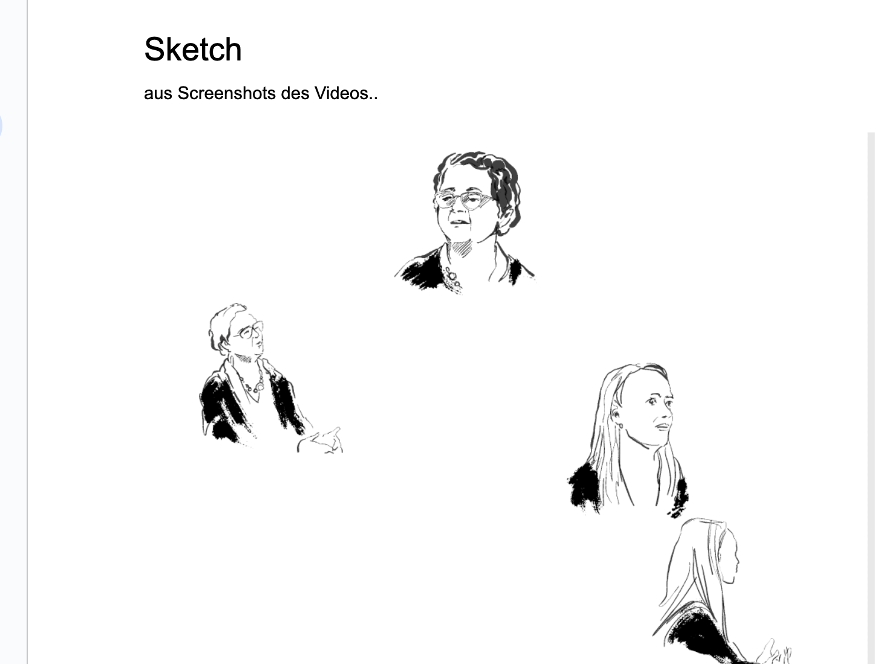
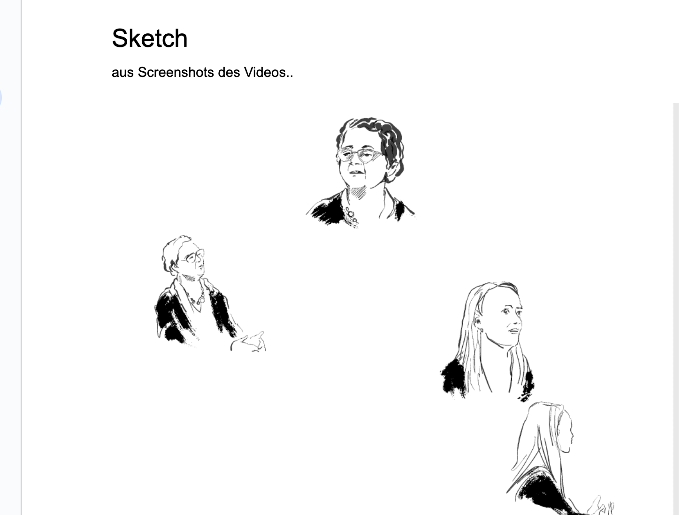

In einem interessanten YouTube-Video (Sternstunde Religion) diskutiert ein Medium, welches Kontakt mit Verstorbenen aufnehmen kann, mit einer evangelischen Theologin und Pastorin.
Das berührt auch das Thema, was durch Meditation oder andere nicht-alltägliche Erfahrungsräume zugänglich ist...
 



 
